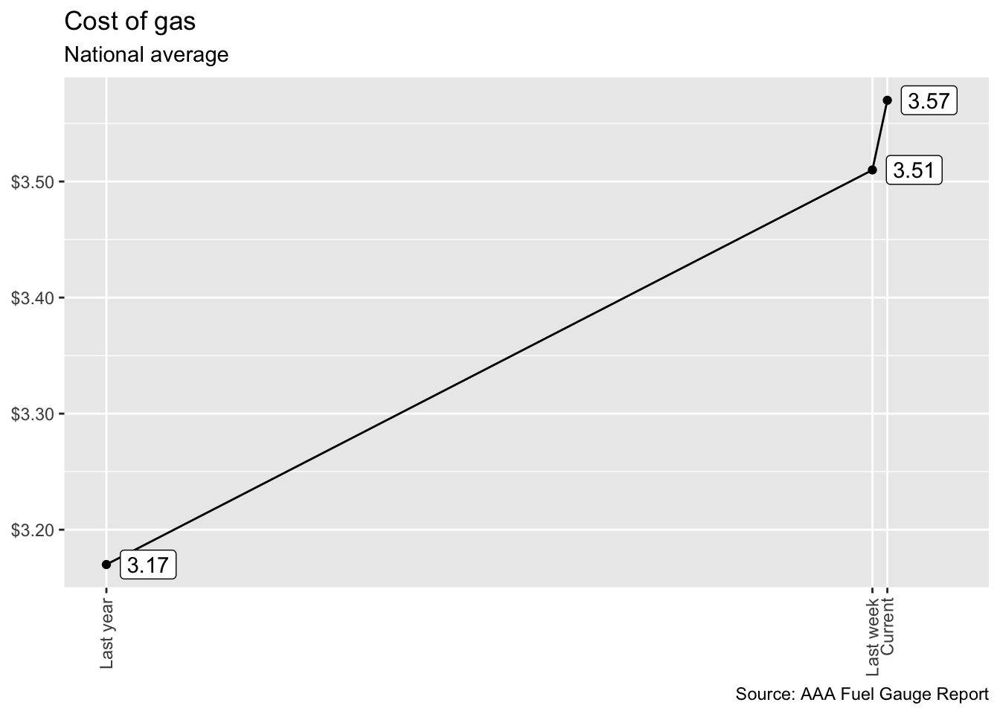
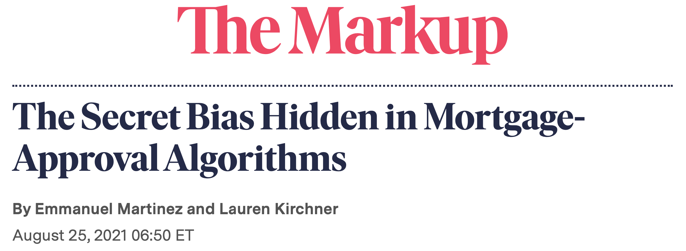
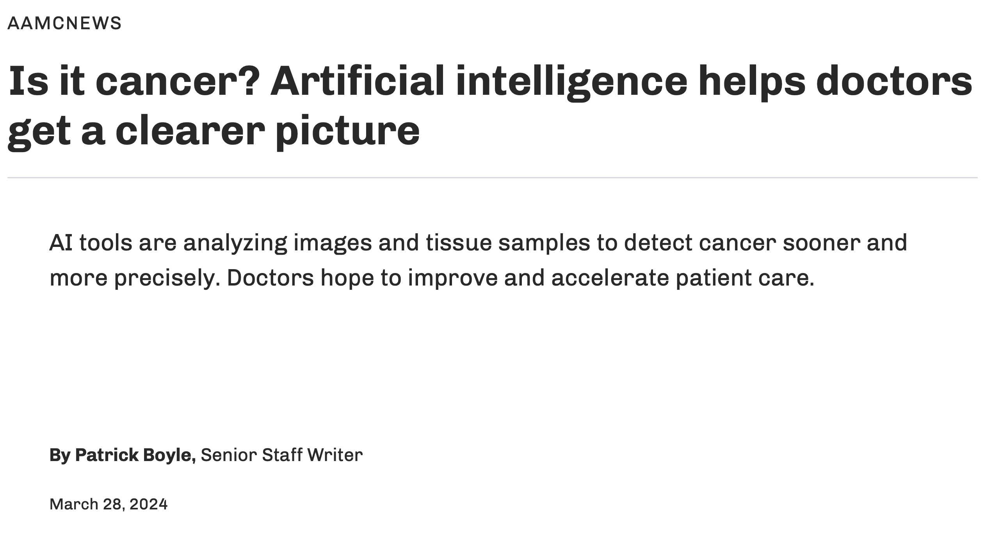
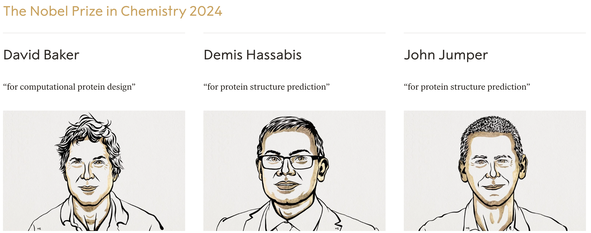

pp<-tibble( year =c(2006, 2006, 2013, 2013), service =c("Abortion", "Cancer", "Abortion", "Cancer"), n =c(289750, 2007371, 327000, 935573))ggplot(pp, aes(x =year, y =n, color =service))+geom_point(size =2)+geom_line(linewidth =1)+geom_text(aes(label =n), nudge_y =100000)+geom_text(aes(label =year), nudge_y =200000, color ="darkgray")+labs( title ="Services provided by Planned Parenthood", caption ="Source: Planned Parenthood", x =NULL, y =NULL)+scale_x_continuous(breaks =c(2006, 2013))+scale_y_continuous(labels =label_number(big.mark =","))+scale_color_manual(values =c("red", "purple"))+annotate( geom ="text", label ="Abortions", x =2009.5, y =400000, color ="red")+annotate( geom ="text", label ="Cancer screening\nand prevention services", x =2010.5, y =1600000, color ="purple")+theme_minimal()+theme(legend.position ="none")
On December 19, 2014, the front page of Spanish national newspaper El País read “Catalan public opinion swings toward ‘no’ for independence, says survey”.
Democratic Party, Governor Gavin Newson, League of Women Voters of California, California Medical Association, Democracy for America (progressive PAC), etc.
NO: keep the cash bail system.
Republican Party, American Bail Coalition, ACLU of Southern California, NAACP, California Asian Pacific Chamber of Commerce, etc.
If passed, each county would be empowered to develop a tool that predicts the risk of a suspect reoffending before trial.
Judges would consult this prediction to make bail decisions.
What might “risk assessment” look like?
Something we will study after spring break:

Above the line means high risk means no bail. Is this progress?
What happens when we try “predictive policing”?
2016 ProPublica article on algorithm used for rating a defendant’s risk of future crime:
In forecasting who would re-offend, the algorithm made mistakes with black and white defendants at roughly the same rate but in very different ways.
The formula was particularly likely to falsely flag black defendants as future criminals, wrongly labeling them this way at almost twice the rate as white defendants.
White defendants were mislabeled as low risk more often than black defendants.
In both political behavior research and voting rights litigation, turnout and vote choice for different racial groups are often inferred using aggregate election results and racial composition. Over the past several decades, many statistical methods have been proposed to address this ecological inference problem. We propose an alternative method to reduce aggregation bias by predicting individual-level ethnicity from voter registration records. Building on the existing methodological literature, we use Bayes’s rule to combine the Census Bureau’s Surname List with various information from geocoded voter registration records. We evaluate the performance of the proposed methodology using approximately nine million voter registration records from Florida, where self-reported ethnicity is available. We find that it is possible to reduce the false positive rate among Black and Latino voters to 6% and 3%, respectively, while maintaining the true positive rate above 80%. Moreover, we use our predictions to estimate turnout by race and find that our estimates yields substantially less amounts of bias and root mean squared error than standard ecological inference estimates. We provide open-source software to implement the proposed methodology. The open-source software is available for implementing the proposed methodology.
Do you have any ethical concerns about installing this package?
wru package
Was the publication of this model ethical? Does the open-source nature of the code affect your answer? Is it ethical to use this software? Does your answer change depending on the intended use?
reasonable people can debate if this outcome is good or bad;
every Californian was invited to decide whether statistics and data science should be deployed to make decisions with major social consequences. They opted out;
This vote was held in the pre-ChatGPT era. What would the outcome be today? Is the case for YES stronger or weaker?
Another algorithmic decision…
 Armies of stats PhDs go to work on these models. They have no training in the ethics of what they’re doing.
A success story?
. . .
Data + Model to predict timing of menstrual cycle:
. . .
A perfect microcosm of the themes of our course, and maybe one of the real triumphs of data and modeling improving modern life.
. . .
…but what if you learned they were selling your data?
Data privacy (aka the reason Tony Soprano ripped the GPS out of this Escalade)
Data privacy
“Your” data
Every time we use apps, websites, and devices, our data is being collected and used or sold to others.
More importantly, decisions are made by law enforcement, financial institutions, and governments based on data that directly affect the lives of people.
Privacy of your data
What pieces of data have you left on the internet today? Think through everything you’ve logged into, clicked on, checked in, either actively or automatically, that might be tracking you. Do you know where that data is stored? Who it can be accessed by? Whether it’s shared with others?
Sharing your data
What are you OK with sharing?
Name
Age
Email
Phone Number
List of every video you watch
List of every video you comment on
How you type: speed, accuracy
How long you spend on different content
List of all your private messages (date, time, person sent to)
Info about your photos (how it was taken, where it was taken (GPS), when it was taken)
What does Google think/know about you?
Have you ever thought about why you’re seeing an ad on Google? Google it! Try to figure out if you have ad personalization on and how your ads are personalized.
Your browsing history
Which of the following are you OK with your browsing history to be used towards?
For serving you targeted ads
To score you as a candidate for a job
To predict your race/ethnicity for voting purposes
Who else gets to use your data?
Suppose you create a profile on a social media site and share your personal information on your profile. Who else gets to use that data?
Companies the social media company has a connection to?
Companies the social media company sells your data to?
In 2016, researchers published data of 70,000 OkCupid users—including usernames, political leanings, drug usage, and intimate sexual details
Researchers didn’t release the real names and pictures of OKCupid users, but their identities could easily be uncovered from the details provided, e.g. usernames
OK Cupid data breach
OK Cupid data breach
Some may object to the ethics of gathering and releasing this data. However, all the data found in the dataset are or were already publicly available, so releasing this dataset merely presents it in a more useful form.
Researchers Emil Kirkegaard and Julius Daugbjerg Bjerrekær
Data privacy
In analysis of data that individuals willingly shared publicly on a given platform (e.g. social media), how do you make sure you don’t violate reasonable expectations of privacy?
Some good news?
Faster, more accurate cancer screening?
Augmenting doctors’ diagnostic capacity so that they make fewer mistakes, treat more people, and focus on other aspects of care:

The Nobel Prize last year

AlphaFold2: “predicting 3D structures [of proteins] (\(y\)) directly from the primary amino acid sequence (\(x\)).”
“researchers can now better understand antibiotic resistance and create images of enzymes that can decompose plastic.”
At some point during your data science learning journey you will learn tools that can be used unethically
You might also be tempted to use your knowledge in a way that is ethically questionable either because of business goals or for the pursuit of further knowledge (or because your boss told you to do so)
How do you train yourself to make the right decisions (or reduce the likelihood of accidentally making the wrong decisions) at those points?